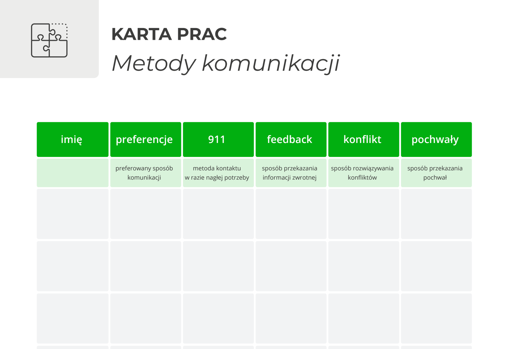

Metody komunikacji – jak ustalić zasady komunikacji w zespole?
Ten sam komunikat wysłany mailem, na Teamsach i przekazany podczas rozmowy może wywołać zupełnie inną reakcję.
Jedna osoba woli zadzwonić. Druga napisze wiadomość. Ktoś oczekuje feedbacku podczas rozmowy 1:1, a ktoś inny czuje się komfortowo, gdy najpierw dostanie czas na przygotowanie się do rozmowy.
Problem zaczyna się wtedy, gdy zakładamy, że inni chcą komunikować się dokładnie tak samo jak my.
Ćwiczenie „Metody komunikacji” pozwala zespołowi porozmawiać o tych różnicach i stworzyć własne zasady współpracy.
Cel ćwiczenia
Poznanie preferencji komunikacyjnych członków zespołu i ustalenie, jak komunikować się w różnych sytuacjach. Oryginalne ćwiczenie zakłada pracę z pięcioma obszarami: codzienna komunikacja, sytuacje pilne, feedback, konflikt i pochwały.
Jak przeprowadzić ćwiczenie?
Przygotuj tablicę z pięcioma pytaniami:

{{ a.q }}
Każda osoba uzupełnia swoją część tablicy.
Potem zaczyna się najważniejsza część: rozmowa o różnicach.
Efekt
Zespół nie tylko lepiej się poznaje. Może na podstawie odpowiedzi stworzyć prosty kontrakt komunikacyjny:
{{ q }}
To niewielkie ćwiczenie może ograniczyć liczbę nieporozumień, zbędnych wiadomości i frustracji wynikającej z niedopasowania sposobu komunikacji. Sam materiał zwraca uwagę, że źle dobrane kanały mogą utrudniać przepływ informacji i powodować przestoje.
{{ f.value }}
Pomożemy zespołowi ustalić zasady, które naprawdę działają w codziennej pracy.